직업상담사-2급 (2015-08-16 기출문제)
1과목: 직업상담학
1. 공감적 이해 과정에 대한 설명으로 틀린 것은?
- 공감적 이해를 위해서는 내담자의 입장에서 느끼고 생각해야 한다.
- 공감적 이해는 내담자의 자기 탐색과 수용을 촉진시킨다.
- 공감적 이해를 위해서 상담자는 자신의 가치관이나 정체감을 내담자에게 맞추어 수용해야 한다.
- 공감적 이해란 지금 –여기에서의 내담자의 감정과 경험을 정확하게 이해하는 것이다.
(정답률: 69%)

2. 신규 입직자나 직업인을 대상으로 조직문화, 인간관계, 직업예절, 직업의식과 직업관 등에 관한 정보를 제공하고 필요시 직업지도 프로그램에 참여하게 하는 상담은?
- 직업전환 상담
- 직업적응 상담
- 구인 구직 상담
- 경력개발상담
(정답률: 88%)
3. 생애진로사정에 대한 설명으로 틀린 것은?
- 생애진로사정은 검사실시나 검사해석의 예비적 단계를 끝내고 실시하는 단계이다.
- 구조화된 면담기술로서 비교적 짧은 시간 내에 내담자에 대한 정보를 수집하는 단계이다.
- 내담자가 하는 일의 유형이나 내담자의 정보를 처리하고 의사결정을 돕는 방법을 모색할 수 있는 단계이다.
- 직업상담의 주제와 관심을 표면화하는 데 덜 위협적인 방법의 단계이다.
(정답률: 70%)
4. 내담자가 수집한 대안목록의 직업들이 실현 불가능할 때 사용하는 상담전략으로 가장 적합한 것은?
- 직업상담사의 개인적 경험을 적극 활용한다.
- 내담자에게 가장 알맞아 보이는 직업을 골라준다.
- 브레인스토밍 과정을 통해 내담자의 대안직업 대다수가 부적절한 것임을 명확히 한다.
- 내담자가 그 직업들을 시도해 본 후 어려움을 겪게 되면 개입한다.
(정답률: 79%)
5. 다음은 내담자의 무엇을 사정하기 위한 것인가?
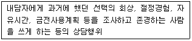
- 내담자의 동기
- 내담자의 생애역할
- 내담자의 가치
- 내담자의 흥미
(정답률: 70%)
6. 부처(Butcher)가 제시한 ‘집단 직업상담을 위한 3단계 모델’에 해당하지 않는 것은?
- 탐색단계
- 전환단계
- 평가단계
- 행동단계
(정답률: 87%)
7. [보기]의 내용 중 인간중심 상담에서 중요하게 요구되는 상담자의 태도로 짝지어진 것은?
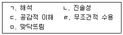
- ㄱ, ㄴ, ㄷ
- ㄴ, ㄷ, ㄹ
- ㄱ. ㄹ, ㅁ
- ㄴ, ㄷ, ㅁ
(정답률: 83%)
8. 상담면접에서 상담자의 질문요령으로 가장 적합한 것은?
- 질문은 가능한 한 개방적 형태를 띠어야 한다.
- ‘예’ 혹은 ‘아니오’ 의 단답식 답변을 이끌어 낼 수 있는 질문을 하여야 한다.
- 상담자는 한꺼번에 많은 정보를 얻기 위해 질문공세를 펴야 한다.
- 내담자를 충분히 이해하기 위해서는 ‘왜’라는 질문을 자주 던져야 한다.
(정답률: 84%)
9. 직업상담에서 도움이 되는 면담행동이 아닌 것은?
- 이해 가능하고 명료한 말을 사용한다.
- 충고한다.
- 가끔 고개를 끄덕인다.
- 개방적 질문을 한다.
(정답률: 88%)
10. 직업상담사의 역할과 가장 거리가 먼 것은?
- 진학상담
- 직무분석 수행
- 직업적응 상담
- 은퇴 후 상담
(정답률: 61%)
11. 상담의 진행단계별 특징에 대한 설명으로 옳은 것은?
- 초기 단계의 주요 작업은 상담에 대한 구조화이다
- 중기 단계의 주요 작업은 내담자와 상담자 간의 촉진적인 관계형성이다.
- 종결 단계의 주요 작업은 문제해결 단계이다.
- 초기 단계의 주요 작업은 과정적 목표의 설정과 달성이다.
(정답률: 72%)
12. 직업상담의 목표와 가장 거리가 먼 것은?
- 능력과 적성발달에 대한 관심
- 진로발달이나 직업문제에 대한 처치
- 결함보다 유능성에 초점을 맞추는 것
- 알맞은 직업을 골라 주는 것
(정답률: 77%)
13. 직업상담의 인지적 접근에 대한 설명이 아닌 것은?
- 심리교육적 접근을 한다.
- 아동기 경험을 중요시한다.
- 잘못된 생각과 신념을 수정한다.
- 사람의 생각이 직업행동을 결정하는 데 중요한 영향을 미친다고 가정한다.
(정답률: 76%)
14. 내담자중심 상담에서 기대하는 상담결과가 아닌 것은?
- 내담자는 이상적 자아개념을 갖는다.
- 내담자는 불일치의 경험이 감소한다.
- 내담자는 문제해결에 있어 더 능률적이 된다.
- 타인을 더 잘 수용할 수 있게 된다.
(정답률: 49%)
15. 정상적인 실직자와의 상담 장면에서 피해야 할 것은?
- 정신분석적 해석을 근거로 한 꿈의 해석
- 공감적 이해
- 자기개방하기
- 반복, 요약, 환언하기
(정답률: 72%)
16. 사이버 직업상담 기법으로 적합하지 않은 것은?
- 질문내용 구성하기
- 핵심 진로논점 분석하기
- 진로논점 유형 정하기
- 직업정보 수집 및 제공
(정답률: 71%)
17. 교류분석(TA)에 대한 설명으로 가장 적합한 것은?
- 어린 시절의 결단에 기초한 삶의 계획을 생활양식이라 한다.
- 의사교류에서 교차적 의사교류가 가장 건강하다고 할 수 있다.
- 사람들은 애정이나 인정 자극(Stroke)을 얻기 위해 게임을 한다.
- 개인 내부에서 이루어지는 다양한 자아들 간의 상호작용을 의사교류라 한다.
(정답률: 58%)
18. 직업상담 프로그램 중 그 목표가 다른 것은?
- 협동적 사회행동 추구
- 퇴직준비 프로그램
- 충격완화 프로그램
- 의사결정능력 배양
(정답률: 38%)
19. 성격에 대한 자아 상태를 부모(P), 성인(A), 아동(C)으로 구분하여 타인들과의 상호작용을 통해 자아 상태를 분석하는 상담 접근법은?
- 행동주의 상담
- 교류분석적 상담
- 인지 · 정서적 상담
- 특성-요인 상담
(정답률: 79%)
20. 실직자 위기상담의 직접적인 목표로 가장 적합한 것은?
- 긴장감 제거와 적응 능력의 회복
- 직업적성에 대한 정확한 이해
- 변화하는 직업세계에 대한 이해
- 직업흥미에 대한 정확한 이해
(정답률: 73%)
2과목: 직업심리학
21. 파슨스(Parsons)가 강조하는 현명한 직업선택을 위한 필수 요인이 아닌 것은?
- 자신의 흥미, 적성, 능력, 가치관 등 내면적인 자신에 대한 명확한 이해
- 현대사회가 필요로 하는 전망이 밝은 분야에서의 취업을 위한 구체적인 준비
- 직업에서의 성공, 이점, 보상, 자격요건, 기회 등 직업세계에 대한 지식
- 개인적인 요인과 직업관련 자격요건, 보수 등의 정보를 기초로 한 현명한 선택
(정답률: 66%)
22. 검사-재검사법을 이용한 신뢰도 측정에 대한 설명과 가장 거리가 먼 것은?
- 시간 간격이 너무 클 경우 측정대상의 속성이나 특성이 변화할 수 있다.
- 반응민감성의 영향으로 검사를 치르는 경험이 후속 반응에 영향을 줄 수 있다.
- 앞에서 답한 것을 기억해서 뒤의 응답 시 활용할 수 있다.
- 문항 간의 동질성이 높은 검사에서 적용하는 것이 좋다.
(정답률: 62%)
23. 검사 점수의 오차를 발생시키는 수검자 요인과 가장 거리가 먼 것은?
- 수행 경험
- 평가 불안
- 수행 능력
- 수검 당일의 생리적 조건
(정답률: 63%)
24. 성인기에 지능이 쇠퇴한다고 단정지었던 과거의 관점에 수정을 가하는 이론으로 가장 적절한 것은?
- 카텔(Cattell)의 결정적 지능
- 스턴버그(Sternberg)의 삼원이론
- 삐아제(Piaget)의 퇴행가설
- 스키너(Skinner)의 강화학습이론
(정답률: 59%)
25. 직무 스트레스를 촉진시키거나 완화하는 조절요인이 아닌 것은?
- A/B 성격유형
- 통제의 소재(Locus of Control)
- 사회적 지원
- 반복적이고 단조로운 업무
(정답률: 67%)
26. 직무 및 일반스트레스에 대한 설명으로 옳은 것은?
- 17-OHCS 라는 당류부신피질 호르몬은 스트레스의 생리적 지표로서 매우 중요하게 사용된다.
- B형 셩격유형이 A형 성격유형보다 높은 스트레스 수준을 유지한다.
- 여기스와 다슨(Yerkes & Dodson)의 역U자형 가설은 스트레스 수준이 낮으면 작업능률이 높아진다는 가설이다.
- 일반적응증후군(GAS)은 경고단계, 저항단계, 소진단계를 거치면서 사람에게 나쁜 결과를 가져다준다.
(정답률: 66%)
27. GATB 직업적성검사에 대한 설명으로 틀린 것은?
- 지필검사와 동작검사로 구성되어 있다.
- 모두 8개 영역의 적성을 검출한다.
- 지능도 측정한다.
- 모두 15개 하위검사로 이루어져 있다.
(정답률: 45%)
28. 홀랜드(Holland)의 성격이론에서 제시한 다음 유형 중 일관성이 가장 낮은 유형은?
- 현실적(R) - 탐구적(I)
- 예술적(A) - 관습적(C)
- 설득적(E) - 사회적(S)
- 사회적(S) - 예술적(A)
(정답률: 71%)
29. 진로성숙도검사(CMI) 중 태도척도의 하위영역과 문항의 예가 잘못 연결된 것은?
- 결정성(Decisiveness) - 나는 선호하는 진로를 자주 바꾸고 있다.
- 관여도(Involvement) - 나는 졸업할 때까지는 진로선택 문제에 별로 신경을 쓰지 않을 것이다.
- 타협성(Compromise) - 나는 부모님이 정해주시는 직업을 선택하겠다.
- 지향성(Orientation) - 일하는 것이 무엇인지에 대해 생각한 바가 거의 없다.
(정답률: 64%)
30. 수퍼(Super)의 진로발달이론에 대한 설명으로 가장 적합한 것은?
- 반두라(Bandura)의 사회학습이론에 근거하여 성차에 대한 설명이 보다 많이 시도되고 있다.
- 진로발달을 환상적 직업선택, 시험적 직업선택, 현실적 직업선택 단계로 나누어 설명하였다.
- 사회경제적인 상황과 노동시장 등은 다루지 않고 있다.
- 이론의 기저를 이루고 있는 것은 ‘자아개념’으로 인간은 자신의 이미지와 일치하는 직업을 선택한다는 주장이다.
(정답률: 51%)
31. 투사법 성격검사가 아닌 것은?
- 로샤(Rorschach) 검사
- TAT 검사
- 문장완성검사
- MBTI
(정답률: 67%)
32. 다음 중 표준편차가 가장 작은 것은?
- 1, 5, 10, 15
- 7, 9, 10, 12
- 3, 7, 10, 12
- 5, 10, 15, 21
(정답률: 75%)
33. 종업원이 직무에서 매우 성공적으로 수행한 경우나 실패한 경우들에 대한 자료를 수집한 후 그 사건들의 구체적인 행동을 알아내고, 이 행동으로부터 지식, 기술, 능력을 수집하는 직무분석 방법은?
- 중요사건 기법(Critical Incident Technique)
- 기능적 직무분석(Functional Job Analysis)
- 직책분석설문지(Position Analysis Questionnaire)
- 주제관련전문가(Subject Matter Expert) 직무분석
(정답률: 79%)
34. 로(Roe)의 욕구이론에 대한 설명으로 틀린 것은?(오류 신고가 접수된 문제입니다. 반드시 정답과 해설을 확인하시기 바랍니다.)
- 부모에 대한 애착이 개인의 진로성숙과 유의미한 상관이 있다.
- 비인간지향적 직업군에는 기술직, 과학직, 옥외활동직이 해당된다.
- Roe의 이론은 진로발달이론이라기 보다는 진로선택이론에 해당된다.
- 보무의 양육방식에 따라 자녀는 사람지향적이거나 사람회피적인 직업을 갖게 된다.
(정답률: 37%)
35. 긴즈버그(Ginzberg)가 제시한 진로발달 단계로 옳은 것은?
- 현실기 → 환상기 → 잠정기
- 환상기 → 현실기 → 잠정기
- 현실기 → 잠정기 → 환상기
- 환상기 → 잠정기 → 현실기
(정답률: 78%)
36. 다운사이징 시대의 경력개발 방향과가장 거리가 먼 것은?
- 조직구조의 수평화로 개인의 자율권 신장과 능력개발에 초점을 두어야 한다.
- 기술, 제품, 개인의 숙련주기가 짧아져야 경력개발을 단기, 연속 학습단계로 이어진다.
- 일시적이 아니라 계속적이고 평생학습으로의 경력개발이 요구된다.
- 경력변화의 기회가 적어지며 조직 내 수평적 이동과 장기고용이 어려워진다.
(정답률: 60%)
37. 작업자 중심 직무분석에서 직무를 성공적으로 수행하는 데 요구되는 인적 속성과 가장 거리가 먼 것은?
- 애착
- 지식
- 기술
- 능력
(정답률: 76%)
38. 직무분석 자료의 특성과 가장 거리가 먼 것은?
- 최신의 정보를 반영해야 한다.
- 논리적으로 체계화되어야 한다.
- 진로상담 목적으로만 사용되어야 한다.
- 가공하지 않은 원상태의 정보이어야 한다.
(정답률: 70%)
39. 윌리암슨(Williamson)이 제시한 진로선택 문제의 주요 영역 4가지에 해당하지 않는 것은?
- 직업 무선택
- 성급한 선택
- 흥미와 적성의 불일치
- 현명하지 못한 직업 선택
(정답률: 76%)
40. 직책분석설문지(PAQ)에 대한 설명과 가장 거리가 먼 것은?
- 작업자 중심 직무분석의 대표적인 예이다.
- 직무수행에 요구되는 인간의 특성들을 기술하는데 사용되는 194개의 문항으로 구성되어 있다.
- 직무수행에 관한 6가지 주요범주는 정보입력, 정신과정, 작업결과, 타인들과의 관계, 직무맥락, 직무요건 등이다.
- 비표준화된 분석도구이다.
(정답률: 78%)
3과목: 직업정보론
41. 구직자에게 일정한 금액을 지원하여 그 범위 이내에서 직업능력개발훈련에 참여할 수 있도록 하고, 훈련이력 등을 개인별로 통합관리하는 제도는?
- 훈련계좌발급제
- 직업능력훈련제도
- 내일배움카드
- 직업능력카드
(정답률: 65%)
42. 근로자직업능력개발법상 훈련방법에 따른 구분이 아닌 것은?
- 집체훈련
- 향상훈련
- 현장훈련
- 원격훈련
(정답률: 67%)
43. 한국표준직업분류(2007)의 대분류 항목과 직능수준과의 관계가 바르게 짝지어진 것은?(관련 규정 개정전 문제로 여기서는 기존 정답인 1번을 누르면 정답 처리됩니다. 자세한 내용은 해설을 참고하세요.)
- 전문가 및 관련 종사자 – 제4직능 수준 혹은 제3직능 수준 필요
- 사무 종사자 – 제3직능 수준 필요
- 단순노무 종사자 – 제2직능 수준 필요
- 군인 – 제1직능 수준 필요
(정답률: 71%)
44. 다음은 무엇에 대한 설명인가?
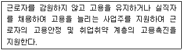
- 실업급여사업
- 고용안정사업
- 취업알선사업
- 직업상담사업
(정답률: 77%)
45. 한국표준산업분류(2008)의 적용원칙에 대한 설명으로 틀린 것은?
- 생산단위는 산출물뿐만 아니라 투입물과 생산공정 등을 함께 고려하여 그들의 활동을 가장 정확하게 설명된 항목에 분류해야 한다.
- 복합적인 화동단위는 우선적으로 세세분류를 정확히 결정하고, 순차적으로 세, 소, 중, 대분류 단계 항목을 결정하여야 한다.
- 산업활동이 결합되어 있는 경우에 그 활동단위의 주된 활동에 따라서 분류하여야 한다.
- 수수료 또는 계약에 의하여 활동을 수행하는 단위는 자기계정과 자기책임 하에서 생산하는 단위와 동일항목에 분류되어야 한다.
(정답률: 75%)
46. 경제활동인구조사에 대한 설명으로 틀린 것은?
- 매월 15일이 포함된 1주간이 실제 조사기간이다.
- 공익근무요원과 외국인은 조사대상에서 제외된다.
- 조사담당직원이 조사대상 가구를 직접 방문하여 면접 조사한다.
- 조사 결과의 발표기관은 통계청이다.
(정답률: 40%)
47. 한국직업사전(2012)의 직업코드 기준은?
- 한국고용직업분류의 대분류
- 한국고용직업분류의 중분류
- 한국고용직업분류의 소분류
- 한국고용직업분류의 세분류
(정답률: 43%)
48. 한국직업사전(2012)의 작업강도 중 ‘보통 작업’에 대한 설명으로 옳은 것은?
- 최고 4kg의 물건을 들어 올리고 때때로 장부, 대장, 소도구 등을 들어 올리거나 운반한다.
- 최고 8kg의 물건을 들어 올리고 4kg 정도의 물건을 빈번히 들어 올리거나 운반한다.
- 최고 20kg의 물건을 들어 올리고 10kg 정도의 물건을 빈번히 들어 올리거나 운반한다.
- 최근 40kg의 물건을 들어 올리고 20kg 정도의 물건을 빈번히 들어 올리거나 운반한다.
(정답률: 69%)
49. 직업정보를 제공하는 유형별 방식의 설명이다. ( ) 안에 가장 알맞은 것은?
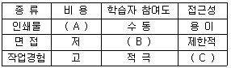
- A – 고, B – 적극, C - 용이
- A – 고, B – 수동, C - 제한적
- A – 저, B – 적극, C - 제한적
- A – 저, B – 수동, C – 용이
(정답률: 77%)
50. 국가기술자격 중 전문사무분야인 사회조사분석사 1급의 응시자격은?
- 해당 종목의 2급 자격 취득 후 해당 실무에 2년 이상 종사한 자
- 해당 실무에 4년 이상 종사한 자
- 대학졸업자 등으로서 졸업 후 해당 실무에 2년 이상 종사한 자
- 전문대학 졸업자 등으로서 졸업 후 해당 실무에 3년 이상 종사한 자
(정답률: 65%)
51. 한국표준직업분류(2007)상 직업활동에 해당하는 경우는?
- 명확한 주기는 없으나 계속적으로 동일한 형태의 일을 하여 수입이 있는 경우
- 연금법, 생활보호법, 국민연금법, 고용보험법등의 사회보장에 의한 수입이 있는 경우
- 이자, 주식배당, 임대료(전세금, 월세금) 등과 같은 자산 수입이 있는 경우
- 예금 인출, 보험금 수취, 차용 또는 토지나 금융 자산을 매각하여 수입이 있는 경우
(정답률: 73%)
52. 한국표준산업분류(2008)상 단일 장소에서 이루어지는 단일 산업활동의 통계단위는?
- 기업집단
- 사업체 단위
- 활동유형단위
- 지역단위
(정답률: 65%)
53. 한국직업전망(2013)의 구성체계에 포함된 항목이 아닌 것은?
- 교육/훈련/자격
- 직업전망
- 연도별 산업동향
- 적성 및 흥미
(정답률: 48%)
54. 워크넷에서 제공하는 직업선호도검사 L형의 하위검사가 아닌 것은?
- 흥미검사
- 성격검사
- 생활사검사
- 구직취약성적응도 검사
(정답률: 73%)
55. 국가기술자격 기사의 응시자격기준으로 틀린 것은?
- 기능사 자격을 취득한 후 응시하려는 종목이 속하는 동일 및 유사 직무분야에서 2년 이상 실무에 종사한 사람
- 산업기사 등급 이상의 자격을 취득한 후 응시하려는 종목이 속하는 동일 및 유사 직무분야에서 1년 이상 실무에 종사한 사람
- 응시하려는 종목이 속하는 동일 및 유사 직무분야의 다른 종목의 기사 등급 이상의 자격을 취득한 사람
- 응시하려는 종목이 속하는 동일 및 유사 직무분야에서 4년 이상 실무에 종사한 사람
(정답률: 52%)
56. 공공직업정보의 일반적인 특성으로 가장 적합한 것은?
- 필요한 시기에만 최대한 활용되도록 한시적으로 신속하게 생산 · 제공된다.
- 특정 분야 및 대상에 국한되지 않고 전체 산업의 직종을 대상으로 한다.
- 정보 생산자의 임의적 기준에 따라 관심이나 흥미를 유도할 수 있도록 해당 직업을 분류한다.
- 유료로 제공된다.
(정답률: 78%)
57. 한국표준직업분류(2007)의 “대분류 2 전문가 및 관련 종사자”에 속하지 않는 직업은?
- 기상예보관
- 경찰관
- 웹마스터
- 운동경기 코치
(정답률: 62%)
58. 한국고용정보원에서 제공하는 ‘워크넷 구인 · 구직 및 취업동향’에 대한 설명으로 틀린 것은?
- 수록된 통계는 전국 고용지원센터, 한국산업인력공단, 시 · 군 · 구 등에서 입력한 자료를 워크넷 DB로 집계한 것이다.
- 공공고용안정기관의 취업지원서비스를 통해 산출되는 구인 · 구직 통계를 제공하여 취업지원사원 등의 국가 고용정책사업 수행을 위한 기초자료를 제공하는 데 목적이 있다.
- 통계표에 수록된 단위가 반올림되어 표기되어 전체 수치와 표내의 합계가 일치하지 않을 수 있다.
- 워크넷을 이용한 구인 · 구직자들만을 대상으로 하므로 통계자료가 노동시장 전체의 수급상황과 정확히 일치한다.
(정답률: 76%)
59. 다음 표의 2012년 7월 고용동향에 대한 분석으로 틀린 것은?
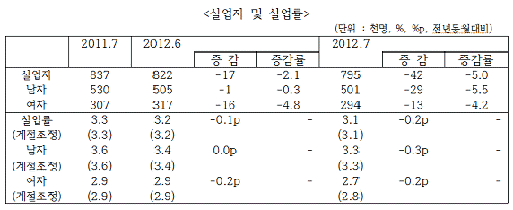
- 실업자는 79만5천명으로 전월대비 4만2천명(-5.0%) 감소하였다.
- 실업자는 성별로 보면 전년동월대비 남자는 50만1천명으로 2만9천명(-5.5%) 감소하였고, 여자는 29만4천명으로 1만 3천명(-4.2%) 감소하였다.
- 실업률은 성별로 보면 남자는 3.3.%로 전년동월대비 0.3%p 하락하였고, 여자는 2.7%로 전년동월대비 0.2%p 하락하였다.
- 계절조정 실업률은 3.1%로 전월대비 0.1%p 하락하였다.
(정답률: 50%)
60. 한국표준직업분류(2007)의 포괄적인 업무에 대한 직업분류 원칙에 해당하지 않는 것은?
- 주된 직무 우선 원칙
- 최상급 직능수준 우선 원칙
- 생산업무 우선 원칙
- 최근 직업 우선 원칙
(정답률: 67%)
4과목: 노동시장론
61. 단체교섭에서 사용자 교섭력의 원천이 아닌 것은?
- 파업근로자 대신에 다른 근로자로 대체 할 수 있는 능력
- 파업근로자들이 외부에 임시로 취업할 수 있는 능력
- 기업의 재정능력
- 직장폐쇄(Lockout)를 할 수 있는 능력
(정답률: 59%)
62. 정부가 노동시장에서 구인 · 구직 정보의 흐름을 원활하게 하면 직접적으로 줄어드는 실업의 유형은?
- 마찰적 실업
- 경기적 실업
- 구조적 실업
- 계절적 실업
(정답률: 71%)
63. 노동과 자본만이 생산요소이고 두 생산요소가 서로 보완재인 경우, 자본의 가격이 하락할 때 노동수요의 변화를 나타낸 그래프는?
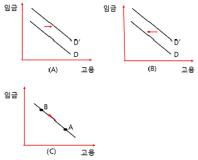
- 그래프 – A
- 그래프 - B
- 그래프 – C
- 그래프 –A, B, C
(정답률: 49%)
64. 전체 근로자의 20%가 매년 새로운 일자리를 찾고 있으며 직업탐색기간이 평균 3개월이라면 마찰적 실업률?
- 1%
- 5%
- 6%
- 10%
(정답률: 63%)
65. 자발적 노동이동(Voluntary Mobility)에 따른 순수익의 현재가치(Present Value)를 결정해 주는 요인이 아닌 것은?
- 새로운 직장의 고용규모
- 새로운 직장에서의 예상근속년수
- 장래의 기대되는 수익과 현 직장의 수익의 차를 현재가치로 할인해 주는 할인율
- 노동이동에 따른 심리적 비용
(정답률: 48%)
66. 보상적 임금격차를 발생시키는 요인이 아닌 것은?
- 작업환경의 쾌적성 여부
- 성별 간의 소득차이
- 교육훈련 기회의 차이
- 고용의 안정성 여부
(정답률: 57%)
67. 경쟁시장에서 아이스크림 가게를 운영하는 A씨는 5명을 고용하여 1개당 2,000원에 판매하고 있으며, 시간당 12,000원을 임금으로 지급하면서 이윤을 극대화하고 있다. 만일 아이스크림 가격이 3,000원으로 오른다면 현재의 고용수준에서 노동의 한계생산물가치는 시간당 얼마이며, 이때 A씨는 노동의 투입량을 어떻게 변화시킬까?
- 9000원, 증가시킨다.
- 18000원, 증가시킨다.
- 9000원, 감소시킨다.
- 18000원, 감소시킨다.
(정답률: 54%)
68. 다음은 무엇에 관한 설명인가?
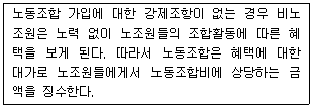
- Closed Shop
- Union Shop
- Agency Shop
- Maintenance Shop
(정답률: 68%)
69. 실질임금 상승률을 계산하는 데 적합한 방식은?
- 명목임금 상승률 ÷ 노동생산성 상승률
- 명목임금 상승률 ÷ 단위당 노동비용 상승률
- 명목임금 상승률 ÷ 근로소득세 증가율
- 명목임금 상승률 ÷ 소비자물가 상승률
(정답률: 60%)
70. 노동조합 조직부문과 비조직부문 간의 임금격차를 축소시키는 효과를 바르게 짝지은 것은?
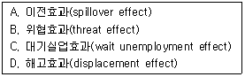
- A, B
- B, C
- C, D
- A, D
(정답률: 61%)
71. 단체교섭에서 힉스의 이론에 대한 설명으로 틀린 것은?
- 노사 양측이 수락하는 임금수준은 그 임금수준에 도달시키기까지 필요한 파업기간의 함수이다.
- 사용자들은 파업기간이 길어짐에 따라 점차 높은 임금을 지불하는 방향으로 양보할 수 밖에 없다
- 단체교섭에서 임금 등이 결정되어지는 과정을 교섭력(Bargaining Power)이라는 개념으로 설명한다.
- 노동조합은 파업이 진행됨에 따라 많은 손실, 즉 비용이 발생하므로 자신의 요구임금률 수준을 낮출 수밖에 없다.
(정답률: 43%)
72. 내부노동시장 형성요인이 아닌 것은?
- 관습
- 현장훈련
- 숙련의 특수성
- 노동강도
(정답률: 58%)
73. 속인급 체계에 대한 설명으로 틀린 것은?
- 연령이나 학력, 경력, 근속년수 등을 기준으로 임금의 개인 배분을 결정한다.
- 직무급이 속인급 체계에 해당한다.
- 근속년수가 늘어갈수록 숙련도가 향상되고 생활비도 많이 필요해진다는 점에서 속인급의 합리성을 확인할 수 있다.
- 선진산업사회에서는 속인급의 영향력이 낮다.
(정답률: 55%)
74. 다음 중 인적자본 투자대상을 모두 고른 것은?
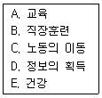
- A, B, C
- A, B, D, E
- A, B, C, E
- A, B, C, D, E
(정답률: 65%)
75. 직무분석과 직무평가를 기초로 하여 직무의 중요성과 난이도 등 직무의 상대적 가치에 따라 개별임금을 결정하는 것은?
- 연공급
- 직무급
- 직능급
- 기본급
(정답률: 65%)
76. 임금격차의 원인을 모두 고른 것은?
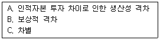
- A
- B
- A, B
- A, B, C
(정답률: 64%)
77. 경기침체시 일자리를 찾게 될 확률이 낮아져 구직을 포기하는 사람들이 늘어나 경제활동인구를 감소시키는 효과는?
- 실망노동자효과(Discouraged Worker Effect)
- 부가노동자효과(Added Worker Effect)
- 대체횩과(Substitution Effect)
- 대기실업효과(Wait-unemployment Effect)
(정답률: 76%)
78. 생산요소에 대한 수요를 파생수요(Dervied Demand)라 부르는 이유로 가장 적합한 것은?
- 생산요소의 수요곡선은 이윤극대화에서 파생되기 때문이다.
- 정부의 요소수요는 민간의 수요를 보완하기 때문이다.
- 생산요소에 대한 수요는 그들이 생산한 생산물에 대한 수요에 의존하기 때문이다.
- 생산자들은 저렴한 생산요소로 늘 대체하기 때문이다.
(정답률: 59%)
79. 다음은 무엇에 대한 설명인가?
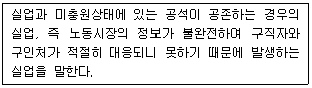
- 경기적 실업
- 마찰적 실업
- 구조적 실업
- 계절적 실업
(정답률: 71%)
80. 내부노동시장의 형성요인이 아닌 것은?
- 기술변화에 따른 산업구조 변화
- 장기근속 가능성
- 위계적 직무서열
- 기능의 특수성
(정답률: 52%)
5과목: 노동관계법규
81. 남녀고용평등과 일·가정 양립 지원에 과한 법률상 고용에 있어서 남녀의 평등한 기회보장 및 대우 등에 대한 설명으로 틀린 것은?
- 사업주는 근로자를 모집하거나 채용할 때 남녀를 차별하여서는 아니 된다.
- 동일 가치 노동의 기준은 지금 수행에서 요구되는 기술, 노력, 책임 및 작업 조건 등으로 하고 사업주가 그 기준을 정할 때에는 고충처리기관의 근로자를 대표하는 자의 동의를 얻어야 한다.
- 사업주는 임금 외에 근로자의 생활을 보조하기 위한 금품의 지급에서 남녀를 차별하여서는 아니 된다.
- 사업주는 여성 근로자의 혼인, 임신 또는 출산을 퇴직 사유로 예정하는 근로계약을 체결하여서는 아니 된다.
(정답률: 68%)
82. 고용정책기본법상 고용조정 지원 등이 필요한 업종 및 지역의 지정요건이 아닌 것은?
- 사업의 전환이나 이전으로 인하여 고용량이 현저히 감소하거나 감소할 우려가 있는 지역
- 사업의 축소 · 정지 · 폐업으로 인하여 고용량이 현저히 감소하거나 감소할 우려가 있는 업종
- 많은 구직자가 다른 지역으로 이동하거나 구직자의 수에 비하여 고용기회가 현저히 부족한 지역으로서 그 지역의 고용 개발을 위한 조치가 필요하다고 인정되는 지역
- 지정업종이 특정 지역에 밀집되어 그 지역의 고용사정이 현저히 악화되거나 악회될 우려가 있는 지역으로서 그 지역 근로자의 실업 예방 및 재취업 촉진 등의 조치가 필요하다고 인정되는 지역
(정답률: 44%)
83. 직업안정법상 유료직업소개사업에 대한 설명으로 옳은 것은?
- 국내 유료직업소개사업을 실시하기 위해서는 고용노동부장관에게 등록하여야 한다.
- 유료직업소개사업의 종사자는 구직자에게 제공하기 위하여 구인자로부터 선급금을 받을 수 있다.
- 유료직업소개사업의 종사자 중 직업상담원이 아닌 사람은 직업소개에 관한 사무를 담당하여서는 아니 된다.
- 유료직업소개사업을 하는 자는 자격을 갖춘 직업상담원을 2인 이상 고용하여야 한다.
(정답률: 49%)
84. 고용상 연령차별금지 및 고령자고용촉진에 관한 법률상 운수업, 부동산 및 임대업의 고령자 기준고용률은?
- 상시근로자수의 100분의 3
- 상시근로자수의 100분의 2
- 상시근로자수의 100분의 6
- 상시근로자수의 100분의 5
(정답률: 73%)
85. 근로기준법의 적용범위에 관한 설명으로 틀린 것은?
- 상시 5명 이상의 근로자를 사용하는 모든 사업 또는 사업장에 적용한다.
- 상시 4명 이하의 근로자를 사용하는 사업 또는 사업장에 대하여는 주휴일, 월차휴가, 연차휴가, 생리휴가, 산전휴가 등을 적용하지 아니한다.
- 동거하는 친족만을 사용하는 사업 또는 사업장에 대하여는 적용하지 아니한다.
- 가사사용인에 대하여는 적용하지 아니한다.
(정답률: 64%)
86. 직업안정법상 특별자치도지사 · 시장 · 군수 및 구청장에게 신고를 필요로 하는 무료직업소개사업은?
- 공익단체가 하는 국내 무료직업소개
- 한국산업인력공단이 하는 무료직업소개
- 한국장애인고용공단이 장애인을 대상으로 하는 무료직업소개
- 교육 관계법에 따른 각급 학교의 장이 재학생 · 졸업생 또는 훈련생 · 수료생을 대상으로 하는 무료직업소개
(정답률: 53%)
87. 근로기준법상 임산부의 보호에 관한 다음 내용에서 ( ) 안에 들어갈 말을 순서대로 바르게 짝지은 것은?
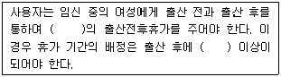
- 90일 - 120일
- 45일 - 90일
- 90일 - 45일
- 120일 – 90일
(정답률: 62%)
88. 고용정책기본법상 근로자의 고용촉진 지원에 대한 내용과 직접적으로 관련되지 않은 것은?
- 저소득층의 고용촉진 지원
- 고령자의 고용촉진 지원
- 여성의 고용촉진 지원
- 취업취약계층의 고용촉진 지원
(정답률: 42%)
89. 남녀고용평등과 일 · 가정 양립 지원에 관한 법률상 직장 내 성희롱에 대한 설명으로 틀린 것은?
- 사업주는 직장 내 성희롱 발생이 확인된 경우 7일 이내에 행위자에 대하여 징계나 그 밖에 이에 준하는 조치를 하여야 한다.
- 사업주는 직장 내 성희롱과 관련하여 피해를 입은 근로자 또는 성희롱 피해 발생을 주장하는 근로자에게 해고나 그 밖의 불리한 조치를 하여서는 아니 된다.
- 사업주는 직장 내 성희롱을 예방하고 근로자가 안전한 근로환경에서 일할 수 있는 여건을 조성하기 위하여 직장 내 성희롱의 예방을 위한 교육을 실시하여야 한다.
- 사업주는 직장 내 성희롱 예방을 위한 교육을 연 1회 이상 하여야 한다.
(정답률: 71%)
90. 근로자직업능력개발법상 근로자의 정의로서 가장 적합한 것은?
- 사업주에게 고용되어 근로를 제공하는 자
- 직업의 종류와 관계없이 임금을 목적으로 사업이나 사업장에 근로를 제공하는 자
- 직업의 종류를 불문하고 임금 · 급료 기타 이에 준하는 수입에 의하여 생활하는 자
- 사업주에게 고용된 자와 취업할 의사가 있는 자
(정답률: 58%)
91. 근로기준법상 경영상 이유에 의한 해고에 대한 설명으로 틀린 것은?
- 사용자가 경영상 이유에 의하여 근로자를 해고하려면 긴박한 경영상의 필요가 있어야 한다.
- 사용자는 해고를 피하기 위한 노력을 다하여야 하며, 합리적이고 공정한 해고의 기준을 정하고 이에 따라 그 대상자를 선정하여야 한다.
- 사용자는 해고를 피하기 위한 방법과 해고의 기준 등에 관하여 그 사업 또는 사업장에 근로자의 과반수로 조직된 노동조합이 있는 경우에는 그 노동조합에 해고를 하려는 날의 50일 전까지 통보하고 성실하게 협의하여야 한다.
- 사용자는 일정한 규모 이상의 인원을 해고하려면 고용노동부장관의 승인을 얻어야 한다.
(정답률: 51%)
92. 근로기준법상 사용자가 근로계약 체결 시 명시해야 할 사항이 아닌 것은?
- 근로계약 위반 시 손해배상액
- 임금의 구성항목
- 임금의 계산방법
- 취업장소
(정답률: 55%)
93. 근로자직업능력개발법상 직업능력개발훈련에서 중요시되어야 할 대상이 아닌 것은?
- 「국민기초생활보장법」에 따른 수급권자
- 「중소기업기본법」에 따른 중소기업의 근로자
- 여성근로자
- 비진학 청소년
(정답률: 53%)
94. 고용정책기본법상 고용정책심의회에 대한 설명으로 틀린 것은?
- 위원장을 포함한 25인 이내의 위원으로 구성한다.
- 고용노동부장관이 위원장이 된다.
- 정책심의회에 분야별로 전문위원회를 둘 수 있다.
- 고용노동부장관은 고용문제에 관하여 학식과 경험이 풍부한 사람을 고용정책심의회 위원으로 위촉할 수 있다.
(정답률: 60%)
95. 우리나라 헌법에 규정된 노동3권이 아닌 것은?
- 단체요구권
- 단체행동권
- 단체교섭권
- 단결권
(정답률: 76%)
96. 남녀고용평등과 일 · 가정 양립 지원에 관한 법률상 상시 500명 이상의 근로자를 고용하는 사업의 사업주에게 부과하는 적극적 고용개선조치에 대한 설명으로 틀린 것은?
- 고용 기준에 미달하는 사업주에 대하여 고용노동부장관이 적극적 고용개선조치 시행계획을 수립하여 제출할 것을 요구할 수 있다.
- 적극적 고용개선조치 시행계획을 제출한 자는 그 이행실적을 고용노동부장관에게 제출하여야 한다.
- 국가와 지방자치단체는 적극적 고용개선조치 우수기업에 행정적·재정적 지원을 하여야 한다.
- 고용노동부장관은 적극적 고용개선조치 이행실적이 부진한 사업주에게 시행계획의 이행을 촉구할 수 있다.
(정답률: 55%)
97. 고용상 연령차별금지 및 고령자고용촉진에 관한 법률상 사업주의 책무가 아닌 것은?
- 고령자 고용촉진 대책의 수립 · 시행
- 연령을 이유로 하는 고용차별 해소
- 고령자에게 그 능력에 맞는 고용기회 제공
- 정년연장 등의 방법으로 고령자의 고용이 확대 되도록 노력
(정답률: 60%)
98. 남녀고용평등과 일·가정 양립 지원에 관한 법률상 육아휴직에 대한 설명으로 옳은 것은?(관련 규정 개정전 문제로 여기서는 기존 정답인 4번을 누르면 정답 처리됩니다. 자세한 내용은 해설을 참고하세요.)
- 육아휴직은 만 6세 이하의 초등학교 취학 전 자녀를 둔 여성근로자만이 청구할 수 있다.
- 사업주는 같은 영유아에 대하여 근로자의 배우자가 육아휴직을 하고 있는 경우라도 그 근로자에게 육아휴직을 허용하여야 한다.
- 육아휴직 기간은 2년 이내로 한다.
- 육아휴직을 신청한 근로자는 휴직개시예정일의 7일 전까지 사유를 밝혀 그 신청을 철회할 수 있다.
(정답률: 69%)
99. 고용상 연령차별금지 및 고령자고용촉진에 관한 법률상 준고령자의 연령은?
- 45세 이상 60세 미만
- 45세 이상 50세 미만
- 50세 이상 55세 미만
- 55세 이상 60세 미만
(정답률: 74%)
100. 고용보험법상 실업의 신고 및 인정에 대한 설명으로 옳은 것은?
- 구직급여를 지급받으려는 자는 이직 후 14일 이내에 직업안정기관에 출석하여 실업을 신고하여야 한다.
- 구직급여는 실업의 인정을 받은 날부터 지급한다.
- 구직급여는 이 법에 따로 규정이 있는 경우 외에는 그 구직급여의 수급자격과 관련된 이직일 의 다음 날부터 계산하기 시작하여 10개월 내에 소정급여일수는 한도로 하여 지급한다.
- 구집급여는 수급자격자가 실업한 상태에 있는 날 중에서 직업안정기관의 장으로부터 실업의 인정을 받은 날에 대하여 지급한다.
(정답률: 48%)